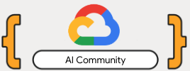

Google · AI Community 2026
The digitalassembly line
Designing AI agents that work like Ford's factory
Zelda Ailine LuconiSenior Cloud Architect, Datwave
Start
Request"Find the best stops for my trip"
🚪Gatekeeperchecks who you are
📝Registratoresaves your profile
🍽️Camerieretakes your order
🧭Suggeritoreplans the stops
Answer3 stops on your route ✓